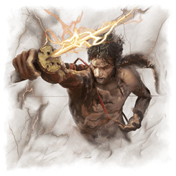
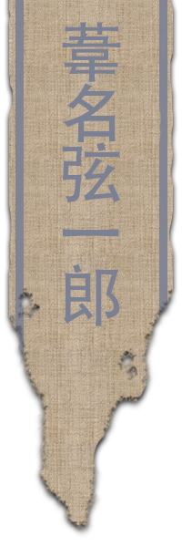

Enfant, Genichiro Ashina (葦名弦一郎) fut recueilli par le maître-épéiste Isshin Ashina, qui venait de mener une rébellion brutale pour récupérer ses terres ancestrales.
Au final des années, le jeune Genichiro gravit les échelons, et devint un des plus redoutés meneurs et épéistes du clan Ashina. Cependant, rongé par la peur de perde sa patrie aux mains du Ministère de l'Intérieur, Genichiro sombra petit à petit dans la maîtrise d'arts hérétiques, suivant les enseignements de son ancien mentor, Tomoe.
"Ashina doit être préservée... "
Genichiro Ashina